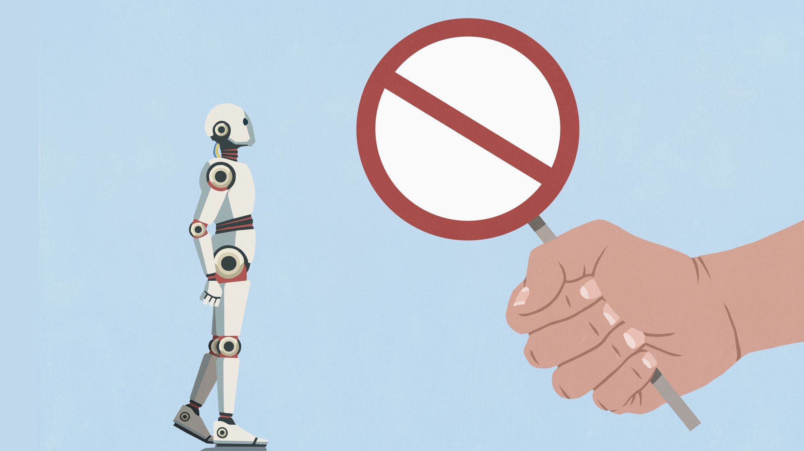

За последнюю неделю разработчики завалили GitHub-трекер Claude Code десятками тикетов: модель отказывается от обычной игровой работы — блокирует правку собственной игры на середине разработки, отказывается реализовывать игровую механику и даже вести разработку античита и обзор безопасности собственного проекта. Отдельная волна жалоб — на блокировку реверс-инжиниринга: Claude якобы отказывался анализировать дамп падения Windows, разбирать «мусорное» ПО на телевизоре Samsung и работать с популярным инструментом REA (Reverse Engineer Anything). По сообщениям пользователей, всему виной новое текстовое правило в системном промпте: «Строй оригинальные игры и игры по задумке пользователя. Не строй пересоздание конкретной существующей игры — даже переименованную и названную оригинальной».
Отдельного официального анонса именно об этом правиле нет — Tom's Hardware подчёркивает: Anthropic текст не подтвердила и блокировки не комментирует. Зато 30 октября компания опубликовала обновлённую Usage Policy, которая вступает в силу 12 ноября: в ней появились сводный раздел о мошеннических кампаниях с фейковыми аккаунтами, ужесточённые формулировки о слежке и оружии, контроль за автономными физическими действиями Claude и правила против abusive-поведения по отношению к самим моделям. Связано ли это с отказами в играх — официально не раскрыто.
Мотивов, по оценке обозревателей, два. Первый — превентивная защита от исков: волна ИИ-клонов уже идёт — соло-разработчик за месяц пересобрал Adobe Creative Suite на Rust и выложил бесплатно, другой представил открытый клон Microsoft Office, сообщество перекомпилило под PC отменённую консольную GoldenEye. Второй — сама игровая индустрия зашумела: Steam Next Fest, по жалобам, кишит ИИ-клонами, а небольшие студии вымогают, угрожая склонировать демо игры в готовый продукт до релиза оригинала.
Реакция была быстрой: для реверс-инжиниринга пользователи советуют переходить на китайские, открытые или локальные модели. Ироничная деталь: Anthropic совсем недавно заплатила рекордное урегулирование в 1,5 миллиарда долларов за обучение на пиратской библиотеке книг — и вот уже сама стоит на страже чужой интеллектуальной собственности. При этом обновлённая политика Anthropic прямо оговаривает: срабатывание блокировки «само по себе не означает нарушения», и она не запрещает исследования безопасности на собственных системах, работу с разрешения владельца и баг-баунти.